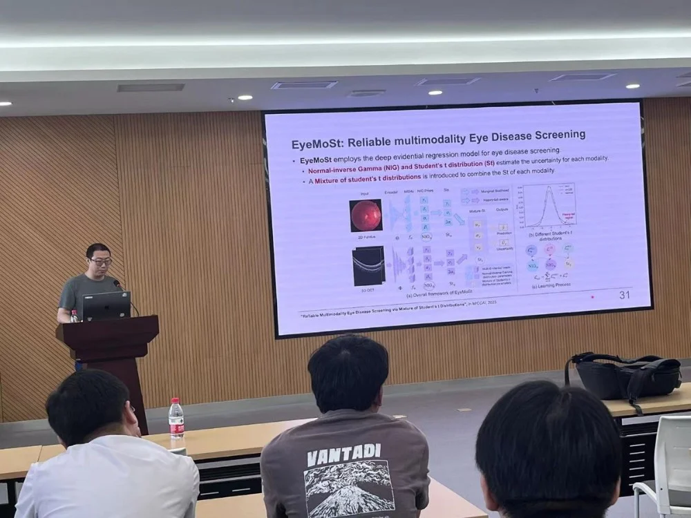
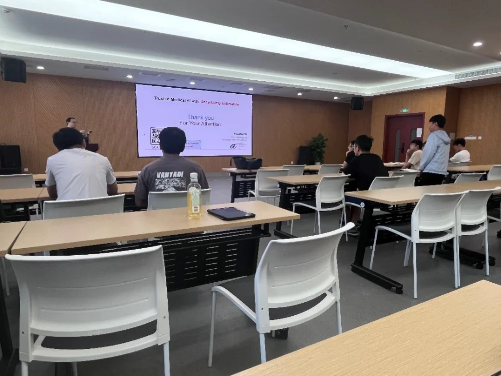
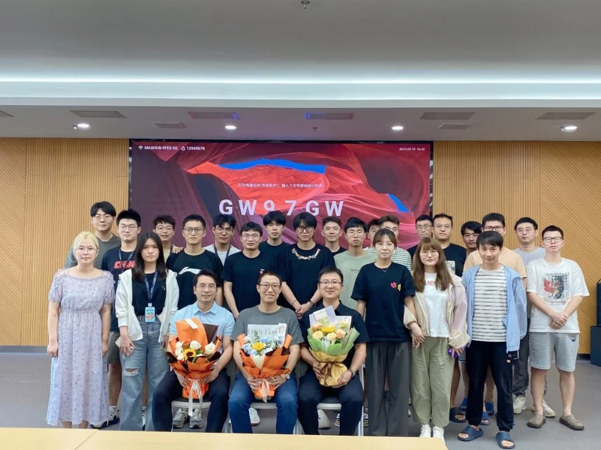

医学图像/眼科影像专题学术分享会----iMED六十三讲
2023年9月10日，恰逢教师节，iMED团队有幸邀请到新加坡科技研究局的付华柱博士进行学术分享。在医工所4009会议室，付博士为大家带来了一场主题为《不确定性评估在医疗保健中的可信度》的精彩讲座。赵一天研究员担任主持人。

付华柱博士是新加坡科技研究局高性能计算研究所 (IHPC)的首席科学家。他的研究领域包括计算机视觉、机器学习、医疗保健领域和可信赖的AI。傅博士在顶级会议和期刊上发表了约180篇论文，被Google Scholar引用超过16,000次。他曾获得多个奖项，包括2021年ICME最佳论文奖和2022年MICCAI-OMIA最佳论文奖。他担任多个期刊的副主编，包括《IEEE Transactions on Medical lmaging》 (TMI)、《IEEE Transactions on NeuraNetworks and Learning Systems》 (TNNLS)和《IEEE Journal of Biomedical and Health Informatics》 (JBHI)。
付老师从不确定性的相关概念和目前j基于不确定性的工作两个方面进行分享。在不确定性的相关概念介绍方面，付老师首先讲了目前AI的趋势主要为多模态、AI如何在全栈式医疗辅助、大模型等，其中模型数据、模型可解释性、模型的可靠性、模型的交互尤为重要。而不确定性主要在模型方面的应用可以分为两个方面。第一是评估模型的可靠性。以眼底图像分类模型为例，训练要求在训练数据和测试数据要具有一致的分布，但是在实际应用中，这样的数据难以获得。而不确定性不再输出单一的预测结果，而是输出多个预测结果的分布，如果多次输出的方差一直，则说明预测结果可靠。第二是将不确定性应用到动态多模态融合，将可靠性加入加个模态，消除不可靠模态对融合结果的干扰。付老师将不确定性分为两种：数据不确定性与模型的不确定性。最后，付老师讲述了不确定性的三种计算方法以及其优缺点。

在进行概念讲解后，付老师向大家介绍了多个利用不确定性做的工作，包含用不确定性做图像分割，用不确定性提示分割结果是否精准、多模态融合等。
分享结束后，郝晋奎博士、郝华颖博士、牟磊博士、马煜辉博后等人分别向付老师提出内容方向的疑惑，付老师一一做出解答。

通过付老师生动形象的讲述，同学们对于不确定性在人工智能应用于医疗影像有了更进一步的了解，同时也加深了同学们对自己课题思考。十分感谢付老师的讲解，同时祝IMED各位老师们教师节快乐！